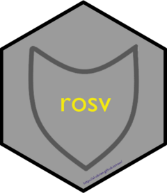

Changelog
Source:NEWS.md
rosv (development version)
- Update jsonlite to address libyajl patches for CVE-2022-24795, CVE-2022-24795, CVE-2023-33460
rosv 0.5.0
CRAN release: 2023-11-23
New features
- Implemented pagination as core functionality in low-level functions (e.g.
RosvQueryBatch()) - Add
osv_scan()as a high-level function to scan various components of a project (focused on R project content) - Add
osv_count_vulns()to return the number of vulnerabilities a package is associated with -
osv_query()is now central to all high level queries and gains functionality viaosv_download()to access all vulnerabilities by ecosystem
Breaking changes
- Upgraded to {httr2} 1.0.0
- Upgraded tests with {httptest2} 1.0.0
- Overhaul
download_osv()to use R6 objects and memoise for core caching functionality, renamedownload_osv()toosv_download()to further standardize names
Minor changes, improvements, and fixes
- Use
httr2::req_perform_sequential()for theRosvVulns()methods to get build-in helpers not available inpurrr::map()alone - Corrected input not being de-duplicated in certain situations for
create_osv_list() - Remove page_token parameter from mid-level functions, all handled at low-level automatically
- Add groupings to pkgdown reference tab
- Add example outputs for getting started vignette
- Add missing R6 dependency and specify more specific minimum versions
- List creation functions now use data.frames specifically and have to be created by
osv_query() - Allow filtering when downloading all vulnerability files from an ecosystem but other ecosystems with the same vulnerability are included (e.g. GHSA-gq4p-4hxv-5rg9)
- Package documentation Rd added